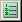
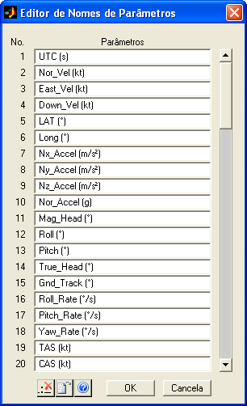

| Menu Ferramentas |
|
Essa ferramenta
permite que o
usuário altere diretamente os nomes de todos os parâmetros das matrizes
de trabalho.
Para acessar o
Editor de Nomes de
Parâmetros, clique em “Ferramentas ► Editor de
nomes de parâmetros”, ou no botao 

Descrição
e Operação
A janela do Editor de Nomes de Parâmetros apresenta uma coluna com a numeração dos parâmetros, a lista com todos os nomes dos parâmetros (exceto "No. OBS.", que não pode ser alterado) e uma barra de rolagem para percorrer a lista, caso necessário.
Para alterar os
nomes dos parâmetros, modifique-os diretamente nos respectivos campos.
Para remover todos os prefixos de telemetria (separados por dois-pontos), clique no botão e confirme.
O parâmetro “ST1:SB1:PB”, por exemplo, seria alterado para “PB” e assim por diante.
Para importar uma lista de parâmetros a partir de um arquivo de texto ou planilha Excel, clique no botão .
A operação é idêntica à Importação de nomes de parâmetros, do menu Arquivo.
Sair
Para confirmar
as alterações realizadas, clique no botão “OK” e confirme. A
matriz PARAM será atualizada.
Para
descartar as alterações, clique no
botão “Cancela”.
 |
Seletor de
parâmetros |
Inserção de unidades nos parâmetros |
|